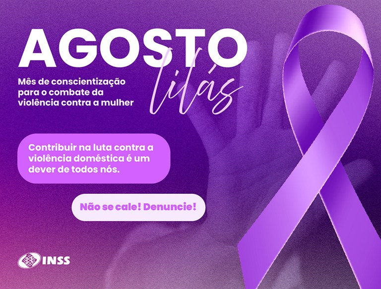

A violencia contra a mulher é um problema grave e real que acontece todos os dias. Muitas vezes, acontece dentro de casa e é silenciosa, escondida, ignorada. Precisamos falar sobre isso e combater todas as formas de violencias.
Existem diferentes tippos de violencia: fisica, psicologica, moral, sexual e pratimonial. todas são graves e causam muitos sofrimento.
Denunciar é um ato de coragem. Se voce presenciar ou sofrer violencia, procure ajuda
Disque 180 - Central de Atendimendo a mulher, funciona 24 horas, é gratuito e anonimo
Gratuito, sigiloso e disponível 24 horas por dia, o serviço realiza acolhimento, orientação e encaminhamentos necessários para garantir a proteção das vítimas.
Campanha do agosto lilas